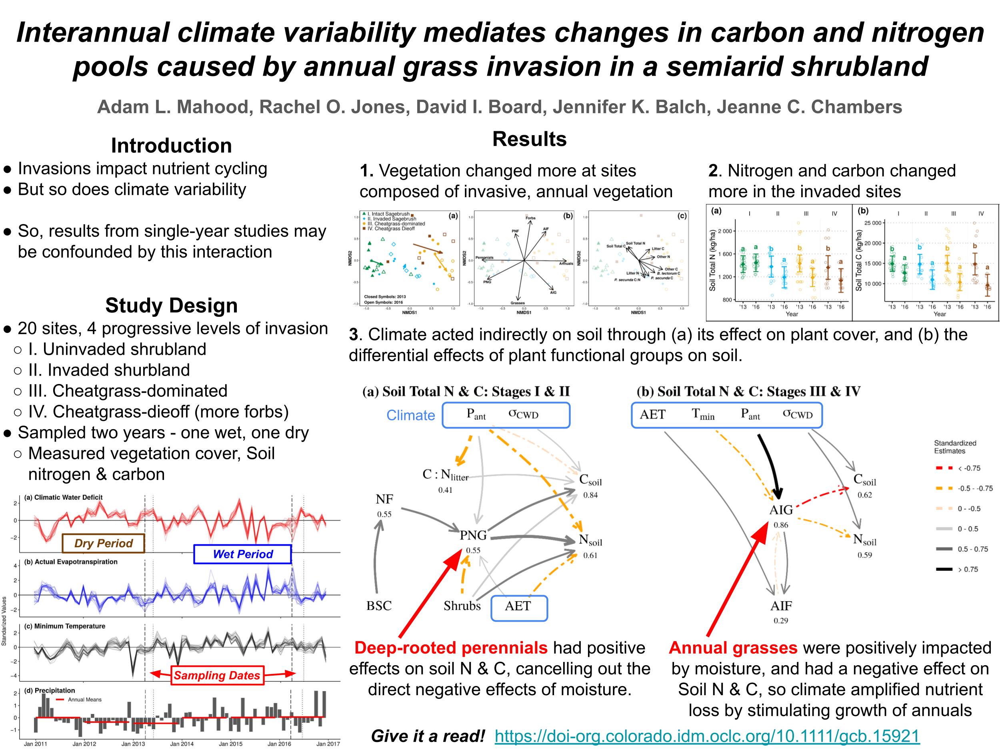
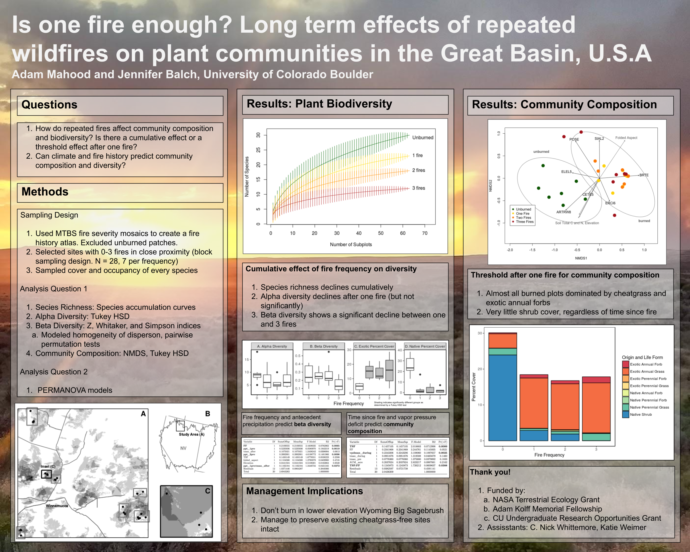

Research
Google Scholar
Ongoing Research
Alternative stable states in sagebrush ecosystems
I am currently working on several projects looking at alternative stable states of vegetation in sagebrush ecosystems that explore the following questions
- How do fire regime characteristics impact seed dispersal? Preprint here.
- Even without repeated fire, will the grassland state remain?
- How do invasive annual grasses and forbs interact and coexist?
Large-scale studies of native and exotic richness relationships
We had a really great “un-conference” before the onset of the pandemic about using National Ecological Observatory Network (NEON) data. We wrote a paper about how these data can be used for invasion ecology (see Gill et all, below). Now, a few of us from that group are working on looking at expanding one of those case studies across all neon sites.
Global patterns of fire activity
- Firedpy is a python package that downloads satellite burned area data and creates fire perimeters. We are currently updating the code to make it run faster and use less memory. See Balch et al 2020 below for more info on the algorithm.
- We ran firedpy for every country on earth, and the derived products are on scholar.colorado.edu. See www.github.com/earthlab/firedpy for more details and links to all derived products.
- We are currently using those products to examine country level fire regimes, and trends in fire activity.
Publications
2022 Mahood, A.L., Jones, R.O., Board, D.A, Balch, J.K., Chambers, J.C. Interannual climate variability mediates changes in carbon and nitrogen pools caused by annual grass invasion in a semi-arid shrubland. Global Change Biology, 28(1), 267-284. https://doi.org/10.1111/gcb.15921

2022 Balch, J.K. Abatzoglou, J.T., Joseph, M.B., Koontz, M.J., Mahood, A.L., McGlinchy, J., Cattau, M.E., Williams, A.P. Warming weakens the nighttime barrier to global fire. Accepted for publication at Nature. http://doi.org/10.1038/s41586-021-04325-1
2021 Mahood, A.L., Fleishman, E., Balch, J.K., Fogarty, F., Horning , N., Leu, M., Zillig M., Bradley, B.A. Cover-based allometric estimate of aboveground biomass of a non-native, invasive annual grass (Bromus tectorum L.) in the Great Basin, USA. Journal of Arid Environments, 193, 104582; https://doi.org/10.1016/j.jaridenv.2021.104582
2021 Fusco, E. J., .Balch, J. K,. Mahood, A. L., Nagy, R. C., Syphard, A. D., Bradley, B. A. The human-grass-fire cycle: How people and invasives co-occur to drive fire regimes. Accepted for publication at Frontiers in Ecology and the Environment.
2021 Gill, N.+, Mahood, A.L.+, Stricker E., Nagy, R.C., Muthukrishnan, R., Morrisette, J., Petri, L., Duffy, K. Meier, C. Six central questions about biological invasions that NEON data science is poised to address. Accepted for publication at Ecosphere. +equally contributing first authors
2021 Nagy, R.C., Balch, J.K.,…Mahood, A.L. Harnessing the NEON Data Revolution to Advance Open Environmental Science with a Diverse, Inclusive, and Data-Capable Community. Accepted for publication at Ecosphere.
2021 Nagy, R. C., Fusco, E. J., Balch, J. K., Finn, J. T., Mahood, A., Allen, J. M., & Bradley, B. A. (2021). A synthesis of the effects of cheatgrass invasion on US Great Basin carbon storage. Journal of Applied Ecology, 58, 327–337. https://doi.org/10.1111/1365-2664.13770
2020 Balch, J. K., St. Denis, L. A., Mahood, A. L., Mietkiewicz, N. P., Williams, T. P., McGlinchy J, and Cook, M. C. FIRED (Fire Events Delineation): An open, flexible algorithm & database of U.S. fire events derived from the MODIS burned area product (2001-19). Remote Sensing, 12(21), 3498; https://doi.org/10.3390/rs12213498

2020 Balch, J. K., Iglesias, V., Braswell, A. E., Rossi, M. W., Joseph, M. B., Mahood, A. L., … Travis, W. R. (2020). Social-Environmental Extremes: Rethinking Extraordinary Events as Outcomes of Interacting Biophysical and Social Systems. Earth’s Future, 8(7), 1–21. https://doi.org/10.1029/2019EF001319
2020 Cattau, M. E., Wessman C., Mahood, A. L., Balch, J. K. Anthropogenic and lightning-started fires are becoming larger and more frequent over a longer season length in the U.S.A. Global Ecology and Biogeography, 29, 668–681. https://doi.org/10.1111/geb.13058
2019 Mahood, A. L., & Balch, J. K. Repeated fires reduce plant diversity in low-elevation Wyoming big sagebrush ecosystems (1984 – 2014). Ecosphere, 10(2), e02591. https://doi.org/10.1002/ecs2.2591

2019 Joseph, M. B., Rossi, M. W., Mietkiewicz, N. P., Mahood, A. L., Cattau, M. E., Nagy, R. C., … Balch, J. K. Spatiotemporal prediction of wildfire size extremes with Bayesian finite sample maxima. Ecological Applications, 29(6), 1266–1281. https://doi.org/10.1002/eap.1898
2017 Balch, J. K., Bradley, B. A., Abatzoglou, J. T., Nagy, R. C., Fusco, E. J., & Mahood, A. L.. Human-started wildfires expand the fire niche across the United States. Proceedings of the National Academy of Science, 114(111), 2946-2951. https://doi.org/10.1073/pnas.1617394114